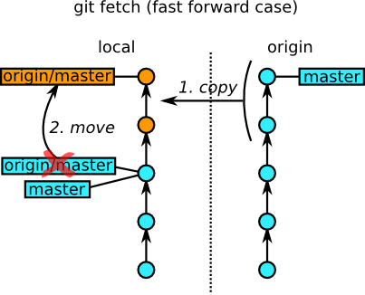
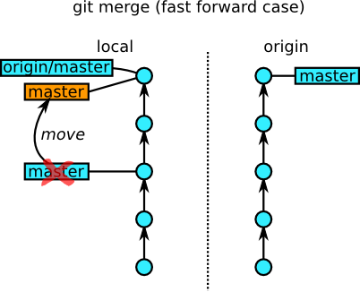
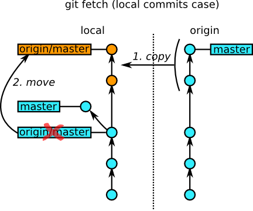
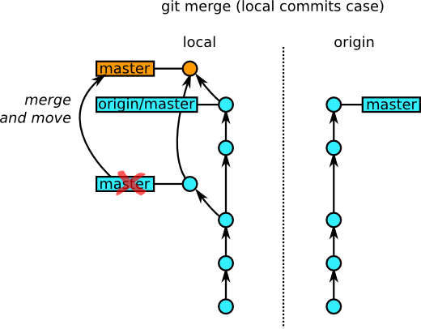
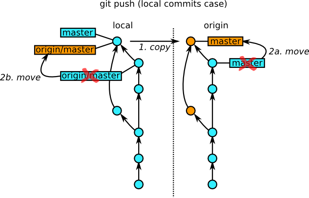
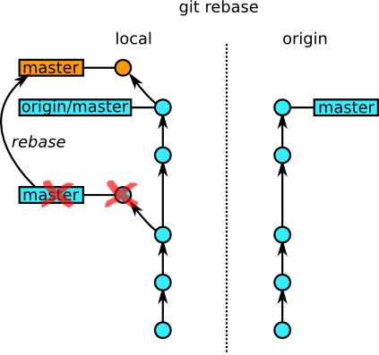

Git notes
How remotes work
One of the difficult things for a git beginner to understand is how remote branches work.
Basically, as git is a distributed version control system, every developer has a full and independent repository. So, how can you pass changes around?
In the examples below, we'll consider a basic case: one remote repository, that we'll call origin, and a local one (that we'll call local). The remote repository has one branch, called master, that has been cloned as origin/master on the local repository. Moreover, the local repository has one local branch, called master as well (but it doesn't need to be), which is set up to track changes that happen on origin/master. Note that, as origin/master is a remote branch, it cannot be checked out -- only master can.
The fetch operation (command git fetch) copies the latest commits from the master on origin to origin/master, and updates the HEAD of the origin/master branch:
git fetch origin

The circles on the schema represent commits, and the arrows are the parent->child relationship between commits. The labels indicate the various HEADs (or branches). It is to be noted that a branch is nothing more than a label following the HEAD of a series of commits.
At the end of this operation, origin/master matches the master branch on the origin, but master on the local repository is still behind. We need to use the git merge command to make master point at the same commit than origin/master:
git merge origin/master

This kind of merge is called a fast-forward because no actual merging of changes is involved. No new commit is created; we have just moved a HEAD forward in history. And that's fast.
Now, what happens if you committed a change on your master on local? Nothing changes for the fetch; the two new commits are still created from origin's master so origin/master matches it exactly:
git fetch origin

However, on local, master and origin/master have bifurcated. To reunite them, you'll need to use git merge, that will create another commit, and make master point to it:
git merge origin/master

The new commit (in orange) is a merge commit: it has two parents. (If conflicts happens, git will ask you to resolve them.)
Ah, but now, your master has two more commits that the origin's master. And you surely want to share your changes with your fellow developers. That's where the git push command is useful:
git push origin

git push will start by copying your two commits to the origin, and ask it to update its master to point at the same location than yours. At the end of the operation, both commit trees should match exactly. Note that git push will (in the default configuration) refuse to push if your origin/master is not up to date.
The "origin" argument to git fetch and git push is optional; git will use all remotes if you don't specify one.
Finally, a note: as fetch and merge are often done together, a git command combines both: git pull. It's smarter than the addition of the two commands, because it knows how to look in your git config what remote branch is actually tracked by your current local branch, and merge from there -- so you don't even need to type the name of origin/master for the merge.
On rebasing
We've seen how git manages to merge your local changes when you pull from a remote repository.
This approach has a small downside, aesthetically: that is, the creation of a large number of merge commits, making the history more difficult to read. Wouldn't it be nice if git offered you the possibility to simply re-apply your local changes on top of what you just pulled?
Rejoice, because that's what the git rebase command is for.
git rebase origin/master will take the local commits (that are reachable from the master head, but not from origin/master), remove them from the commit tree, and re-apply them on top of origin/master, before moving the master head to the top of the new line of commits it just created. That way, the history is kept linear:

You can afterwards just push your new commits.
Important warning: git rebase changes your commits. Because their place in the tree will be different, their SHA1 will be different as well; and the old ones will disappear. For that reason, you must not manipulate commits with rebase if you have already published them in a shared repository from which someone else might have fetched.
Rebasing is a powerful tool that will enable you to manipulate your branches, moving lines of commits from one location to another. The git-rebase man page has more examples.
Back to consttype